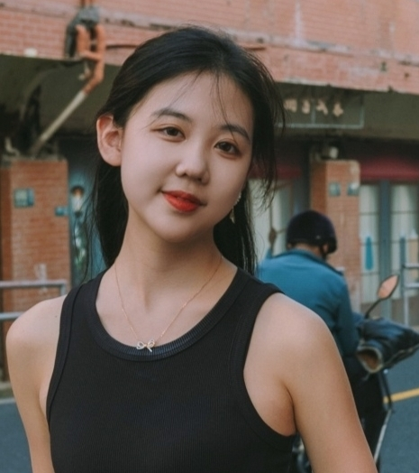

I am currently a senior student majoring in Data Science in the department of Computer Science and Engineering at University of Michigan - Ann Arbor . Also, I'm studying my minor for Math in College of Literature, Science and The Arts of Umich . And I currently join in Statistics & Optimization for Trustworthy AI (SOTA) lab group to explore more about LLM and Reinforcement Learning. I am also join Foreseer Group to explore cutting-edge research related to data mining, machine learning, and information retrieval.

I am currently doing my dual degree program in Shanghai Jiao Tong Univeristy as an Electrical and Computer Engineering student and in University of Michigan - Ann Arbor as a Data Science student.